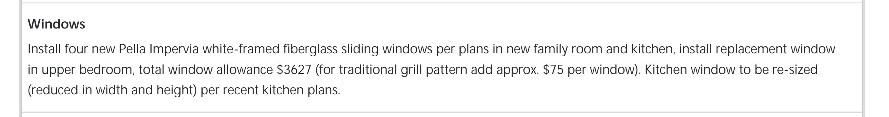
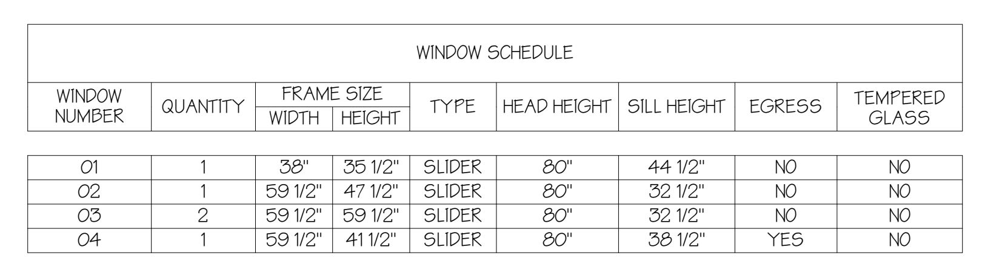
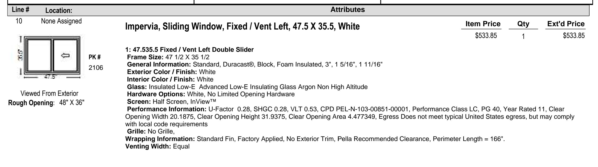
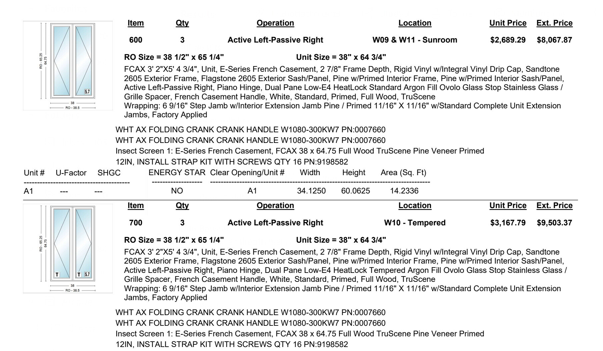

Windows
Windows touch structure, weather resistance, finish carpentry, paint, and code compliance. Using new-construction units with flanges lets you tie into the weather-resistive barrier (WRB) properly but requires full access to the rough opening.
Quick Reference
- Plan to remove trim on the exterior to replace a window; consider removing the interior trim as well
- Measure the rough opening, not the old sash; order the unit ¼" undersize for shimming. Best practice: pop one piece of trim to verify every dimension.
- Flash with a sill-pan first, then jambs. After, tape the sides then top.
- Air-seal and insulate with low-expansion foam or backer-rod + sealant
- Confirm smooth operation before and after foaming
- Code hot-spots: bedroom egress (R310), safety-glazing rules (R308.4.2 & R308.4.3), and ENERGY STAR v7 U-factor ≤ 0.22 in Michigan
Materials and Tools
- Tape measure and level
- Pry bar, hammer, and 1.5" roofing nails
- Sill-pan flashing tape or metal
- Shims
- Low-expansion foam OR backer-rod and sealant
- Drip cap (if not integral)
- Interior casing, exterior trim or coil stock, paint/caulk
Process
- Ordering
- Remove a trim board to record the rough opening dimensions
- Confirm window style with the client
- Request a quote from a dealer
- Review pricing and specifications with the client
- Place the order once approved
- Installation
- When windows arrive, protect finished surfaces
- Remove exterior trim and interior trim if necessary
- Install sill pan flashing
- Set the window:
- Shim up ¼" from the sill
- Center left to right
- Tack one bottom corner
- Level the sill with additional shims
- Tack the opposite corner
- Check both jambs for plumb
- Finish nailing the flanges
- If installing multiple windows in a bank, confirm they're level with each other and properly spaced
- Tape exterior sides then top (leave bottom flange untaped for drainage)
- Finishing
- Air-seal from the interior:
- Spray low-expansion foam between window frame and rough opening, OR
- Install backer rod with sealant, OR
- Tape the frame to the rough opening with insulation behind
- Verify the window operates smoothly
- Install interior casing, stool, and apron
- Install exterior drip cap (if not integral to the window)
- Install exterior trim or coil wrap
- Paint and caulk as needed
- Air-seal from the interior:
Best Practices
- Run a sealant bead behind top and side flanges (leave bottom open to drain)
- Slope the rough sill ¼" to create a downslope before flashing
- Add a back-dam on the interior sill edge to stop inward leaks
Inspections
Windows aren't usually inspected individually but are reviewed as part of Rough Building or Final Building inspections. The inspector will check the following:
- Egress Windows (R310) - Emergency rescue openings require:
- Sill height ≤ 44" above finished floor
- Open area ≥ 5.7 ft² (above grade)
- Width ≥ 20"
- Height ≥ 24"
- Safety Glazing Adjacent to Doors (R308.4.2) - Tempered glass required when:
- Bottom edge is less than 60" above the floor
- Glass is within 24" of a door
- Safety Glazing in Large Low Windows (R308.4.3) - Tempered glass required when all of the following apply:
- Single lite greater than 9 ft²
- Bottom edge less than 18" above floor
- Top edge more than 36" above floor
- Walking surface within 36"
- Safety Glazing in Wet Areas (R308.4.5) - Tempered glass required when within 60" of a source of water (sink, tub, toilet, etc.)
Client Communication
- Advise that interior trim may not survive full-frame demo; budget for replacement
- The builder should determine the size and fit of the new windows and guide the client on a style that meets their goals
Window Specification Examples
Example Proposal/Contract Call Out
This is an example of what may be written in a build contract. Sometimes "final" window decisions are made before the contract is signed, but not always.

Example Blueprint Window Schedule
The blueprint often doesn't contain enough information to correctly or fully order a window. Compare the information here to the Example Window Quote below.

Example Window Quotes
Note the jamb thickness, colors, screen style and color, slide direction, material, hardware specifics, etc.


Resources
- Window Order Form
- Window and Door Install Checklist
- Andersen 400 Series: Installation Guide (PDF)
- Pella Lifestyle Series: Double-Hung Installation Guide (PDF)
- ASTM E2112 - Standard Practice for Installation of Exterior Windows
- AAMA 2400 - Standard Practice for Installation of Windows with a Mounting Flange
Last revised: 01/29/2026
Feedback on this page
Spot an error or have a suggestion? Send a quick note. Name and email are optional.